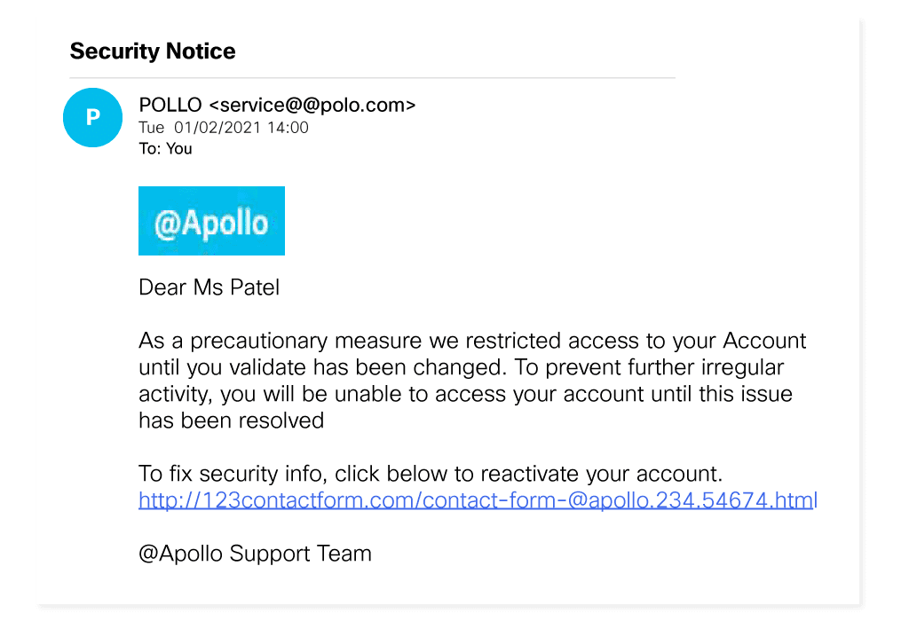

B6 Security
Kiberbiztonság mindenkinek***
1. rész : Bevezetés
Üdvözöljük ebben a részben, amelynek célja, hogy segítsen megérteni a kiberbiztonság növekvő igényét.
A kibertámadások soha nem látott mértékű megugrásával szembesülve még soha nem volt ilyen magas a kereslet a kiberbiztonsági szakemberek iránt.
Tudjon meg többet arról, mit akarnak a kiberbűnözők, és mit tehet annak érdekében, hogy a kiberfenyegetés soha ne váljon valósággá.
1.2 Egy szervezet adatai

Mielőtt elkezdené tanulmányozni a szervezeti adatok védelmére vonatkozó bevált gyakorlatokat, tudnia kell, mi az. Az olyan szervezetekben, mint az @Apollo eLearning cég, két fő típusú adatot kell figyelembe venni.
Fedezzük fel ezeket most.
1.2.1 Egy szervezet adatainak a típusai
1.2.1.1 Hagyományos adatok
A hagyományos adatokat általában minden szervezet - kicsik és nagyok - létrehoz és kezeli is azokat. A következőkben összefoglalom tartalmuk alapján típusaikat:
- Tranzakciós adatok, például a vételi és eladási adatok, a termelési tevékenységek és az alapvető szervezeti műveletek, például a foglalkoztatási döntések meghozatalához felhasznált információk.
- Szellemi tulajdon, például szabadalmak, védjegyek és új terméktervek, amelyek lehetővé teszik egy szervezet számára, hogy gazdasági előnyhöz jusson versenytársaival szemben. Ezeket az információkat gyakran üzleti titoknak tekintik, és elvesztésük katasztrofálisnak bizonyulhat egy vállalat jövője szempontjából.
- Pénzügyi adatok, például eredménykimutatások, mérlegek és pénzforgalmi kimutatások, amelyek betekintést nyújtanak a vállalat egészségi állapotába.
1.2.1.2 Intelligens eszközök (Internet of Things = IoT) és a Big Data
Az IoT fizikai objektumok nagy hálózata, például érzékelők, szoftverek és egyéb berendezések. Mindezek a „dolgok” kapcsolódnak az internethez, és képesek adatokat gyűjteni és megosztani. Tekintettel arra, hogy a tárolási lehetőségek a felhő és a virtualizáció révén bővülnek, nem meglepő, hogy az IoT megjelenése az adatok exponenciális növekedéséhez vezetett, és új érdeklődési területet teremtett a technológia és az üzleti élet számára „Big Data” néven.
1.2.2 A McCumber-kocka
A McCumber Cube egy modellkeret, amelyet John McCumber hozott létre 1991-ben, hogy segítse a szervezeteket az információbiztonsági kezdeményezések létrehozásában és értékelésében, figyelembe véve az összes kapcsolódó tényezőt, amely befolyásolja őket. Ennek a biztonsági modellnek három dimenziója van:
- Az információs rendszerek védelmének alapelvei.
- Az információ védelme annak minden lehetséges állapotában.
- Az adatok védelmére használt biztonsági intézkedések.
Az információs rendszerek védelmének alapelvei.
- A Confidentiality - titoktartás olyan szabályok összessége, amelyek megakadályozzák az érzékeny információk jogosulatlan személyek, erőforrások és folyamatok számára történő nyilvánosságra hozatalát. A titoktartás módszerei közé tartozik az adatok titkosítása, a személyazonosság-ellenőrzés és a kétfaktoros hitelesítés.
- Az Integrity - sértetlenség biztosítja, hogy a rendszerinformációk vagy folyamatok védve legyenek a szándékos vagy véletlen módosításoktól. A sértetlenség biztosításának egyik módja a hash függvény vagy az ellenőrző összeg használata.
- Az Availability - elérhetőség azt jelenti, hogy a jogosult felhasználók szükség esetén hozzáférhetnek rendszerekhez és adatokhoz, és azok, amelyek nem felelnek meg a feltételeknek, viszont nem. Ez a berendezések karbantartásával, hardverjavításokkal, az operációs rendszerek és szoftverek naprakészen tartásával, valamint biztonsági mentések létrehozásával érhető el.
Az információ védelme annak minden lehetséges állapotában.
- A Processing - feldolgozás olyan adatokra vonatkozik, amelyeket egy művelet végrehajtására használnak, például adatbázis-rekord frissítésére (folyamatban lévő adatok).
- A Storage - tárolás a memóriában vagy egy állandó tárolóeszközön, például merevlemezen, szilárdtestalapú meghajtón vagy USB-meghajtón tárolt adatokra vonatkozik (nyugalmi állapotban lévő adatok).
- Az Transmission - átvitel az információs rendszerek között utazó adatokra vonatkozik (átvitt adatok).
Az adatok védelmére használt biztonsági intézkedések.
- Az Awareness, training and education - tudatosság, a képzés és az oktatás azok az intézkedések, amelyeket egy szervezet vezet be annak biztosítására, hogy a felhasználók tájékozottak legyenek a lehetséges biztonsági fenyegetésekről és azokról az intézkedésekről, amelyeket megtehetnek az információs rendszerek védelme érdekében.
- A Technology - technológia olyan szoftver- és hardveralapú megoldásokat jelent, amelyek az információs rendszerek, például a tűzfalak védelmére szolgálnak, és amelyek folyamatosan figyelemmel kísérik a hálózatot az esetleges rosszindulatú események felfedése érdekében.
- A Policy and procedure A házirend és eljárásleírás az adminisztratív ellenőrzésekre vonatkozik, amelyek megalapozzák azt, hogy a szervezet hogyan hajtja végre az információbiztosítást, például az incidensekre vonatkozó terveket és a legjobb gyakorlatokra vonatkozó iránymutatásokat.
1.2.3 Mit gondolsz?
Egy érintett ügyfél továbbította ezt, a szerintük veszélyes e-mailt. Első ránézésre olyan, mintha az @Apollo küldte volna, de valami kissé "hamys"-nak tűnik. 
Nézd meg az e-mailt. Az alábbiak közül melyik jelzi,
hogy valóban adathalász e-mailről van szó?
Válassz négyet! (Helyes kiválasztás esetén a háttér zöld színre vált)
Magyarázat
Az adathalász e-maileket nehéz észrevenni. Például gyakran név szerint szólítanak meg, hogy jogosnak tűnjenek, de a hackerek könnyen megtalálják ezeket az információkat az interneten. Ezért fontos, hogy figyelj és gondolkodj, mielőtt kattintasz.
A közelebbi vizsgálat feltárja
- hogy a feladó e -mail domainje helytelenül van írva
- hogy a link URL-je nem a @Apollo webhelyére mutat
- hogy rossz a nyelvezet, a helyesírás és a nyelvtan
- hogy gyenge minőségű, pixeles a grafika
1.2.4 Ez most tényleg igaz?
Igen, az adathalászat nagyon gyakori és gyakran működik is. Például 2020 augusztusában a Razer elitjátékmárka adatvédelmi incidenst tapasztalt, amely körülbelül 100 000 ügyfél személyes adatait fedte fel.
Egy biztonsági tanácsadó felfedezte, hogy egy felhőfürt (az interneten keresztüli adattárolást, adatbázisokat, hálózatokat és szoftvereket biztosító, összekapcsolt szerverek csoportja) rosszul lett konfigurálva, és a Razer infrastruktúrájának egy szegmensét a nyilvános interneten elérhetővé tette, ami adatszivárgást eredményezett.
A Razernek több mint három hétbe telt, amíg a felhőpéldányt a nyilvános hozzáféréstől megvédte, és ezalatt a kiberbűnözők hozzáférhettek az ügyfelek információihoz, amelyeket felhasználhattak a támadások tervezése során, mint például azt, amely a @Apollo ügyfelét is érte.
A szervezeteknek ezért rendkívül aktív módon kell megközelíteniük a felhőbiztonságot, hogy szavatolják az érzékeny adatok biztonságát.
1.2.5 Biztonsági behatolások, adatok feltörése
Az adatbiztonság megsértésének következményei súlyosak, és egyre gyakoribbá válnak.
A Persirai botnet
2017-ben az "intelligens" eszközök internete (IoT) botnet, a Persirai több mint 1000 különböző internetes protokoll (IP) kamerát célzottmeg, megnyitva a portokat, hogy beadjon egy parancsot, amely arra kényszerítette a kamerákat, hogy csatlakozzanak egy olyan webhelyhez, amely rosszindulatú programokat telepített rájuk. A kártevő letöltése és végrehajtása után törölte magát, és így képes volt a memóriában futni, hogy elkerülje az észlelést.
Ezekből a különböző gyártótól származó kamerákból több mint 122 ezret átprogramoztak, és elosztott szolgáltatásmegtagadási (DDoS) támadásokat hajtattak velük végre, tulajdonosaik tudta nélkül. A DDoS támadás akkor következik be, amikor több kártevővel fertőzött eszköz kérésekkel árasztja el a célzott rendszer erőforrásait.
Az IoT egyre több eszközt kapcsol össze, és így egyre több alkalmat teremt a számítógépes bűnözők támadására.
Az Equifax Inc.
2017 szeptemberében az Egyesült Államokban működő Equifax fogyasztói hiteljelentő ügynökség nyilvánosan bejelentett egy adatvédelmi incidenst: a támadók kihasználhatták a webes alkalmazás szoftverének egyik sebezhetőségét, hogy hozzáférhessenek ügyfelek millióinak érzékeny személyes adataihoz.
Erre a jogsértésre válaszul az Equifax létrehozott egy külön weboldalt, amely lehetővé tette az Equifax ügyfeleinek, hogy megállapítsák, veszélyeztetik-e adataikat. Azonban ahelyett, hogy az equifax.com aldomainjét használta volna, a vállalat új domainnevet állított fel, amely lehetővé tette a kiberbűnözők számára, hogy hasonló nevű jogosulatlan webhelyeket hozzanak létre. Ezeket a webhelyeket arra használták, hogy az ügyfeleket személyes adatok megadására csábítsák.
A támadók ezen információk alapján ellophatják az ügyfél személyazonosságát és felhasználhatják azt. Ilyen esetekben az ügyfélnek nagyon nehéz bizonyítani a csalást, tekintettel arra, hogy a hacker a személyes adatait mind ismeri.
Ha valaha is hasonló helyzetbe kerülsz, gyorsan ellenőrizd, hogy az adatai nem kerültek-e veszélybe, így minimalizálhatod a hatást. Ne feledd, hogy válság idején lépre csalhatnak a hamisított webhelyeken.
Mindig légy óvatos, amikor személyazonosításra alkalmas adatokat szolgáltatsz ki az interneten. Rendszeresen ellenőrizd a hiteljelentéseit, és haladéktalanul jelents be minden hamis és hibás információt, például az általad nem kezdeményezett hitelkérelmeket vagy a bankkártyádról történő hibás vásárlást.
1.2.6 A biztonsági behatolások következményei
Ezek a példák azt mutatják, hogy a biztonsági behatolásoknak a következményei súlyosak lehetnek.
Alább összafoglalom ezeket a hatásokat:
Reputational damage
A security breach can have a negative long-term impact on an organization’s reputation that has taken years to build. Customers, particularly those who have been adversely affected by the breach, will need to be notified and may seek compensation and/or turn to a reliable and secure competitor. Employees may also choose to leave in light of a scandal.
Depending on the severity of a breach, it can take a long time to repair an organization’s reputation.
Vandalism
A hacker or hacking group may vandalize an organization’s website by posting untrue information. They might even just make a few minor edits to your organization’s phone number or address, which can be trickier to detect.
In either case, online vandalism can portray unprofessionalism and have a negative impact on your organization’s reputation and credibility.
Theft
A data breach often involves an incident where sensitive personal data has been stolen. Cybercriminals can make this information public or exploit it to steal an individual’s money and/or identity.
Loss of revenue
The financial impact of a security breach can be devastating. For example, hackers can take down an organization’s website, preventing it from doing business online. A loss of customer information may impede company growth and expansion. It may demand further investment in an organization’s security infrastructure. And let’s not forget that organizations may face large fines or penalties if they do not protect online data.
Damaged intellectuel property
A security breach could also have a devastating impact on the competitiveness of an organization, particularly if hackers are able to get their hands on confidential documents, trade secrets and intellectual property.